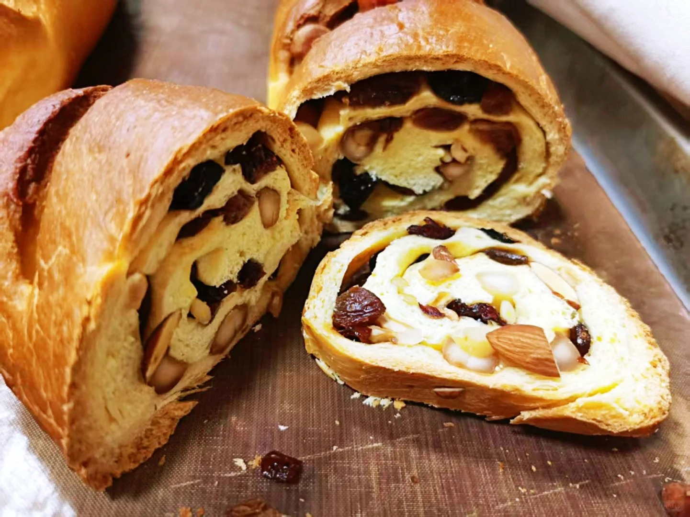
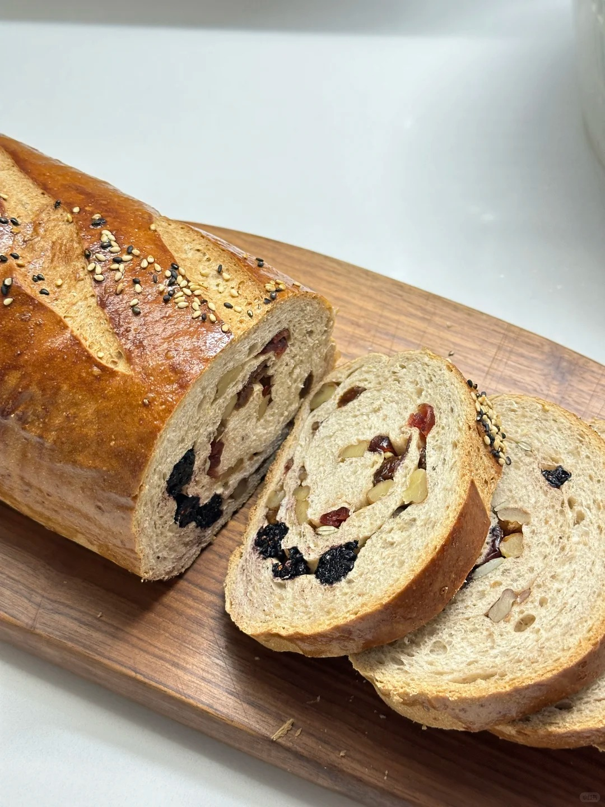
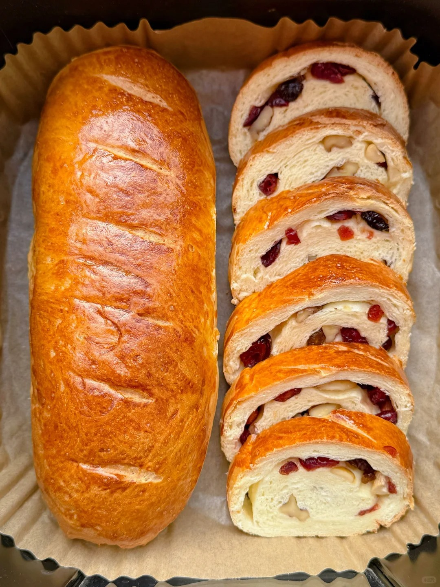

列巴



列巴是一种具有浓郁俄罗斯风情的面包，在中国东北地区尤其是哈尔滨也有着深远的影响和广泛的传播。大列巴个头较大，食用时通常切成片，可以用微波炉烘热后，抹上果酱，夹上奶酪、火腿、香肠片等食用，也可以把列巴撕碎放到汤和牛奶里吃，还可以搭配哈尔滨红肠一同食用，别有一番风味。 列巴起源于俄罗斯，其历史可以追溯到古代。5000-6000 年前埃及人已利用发酵制作面包，后经希腊和罗马传入欧洲大陆，俄罗斯人在 9 世纪开始掌握面包烘烤技术。13 世纪，亚历山大・涅夫斯基下令把大列巴作为士兵的主食。19 世纪末，随着中东铁路的修建，大列巴被带到了哈尔滨。1900 年，俄国商人伊万・雅阔洛维奇・秋林创建了秋林洋行哈尔滨分行，用前店后厂的模式生产列巴，使其在中国东北地区流行开来。在俄罗斯，面包代表着慷慨好客，“面包和盐” 是迎接贵宾的至高荣誉。而在哈尔滨，列巴是城市历史文化的见证，是中俄文化融合的产物，秋林大列巴被称为哈尔滨风味食品一绝，2007 年，秋林大面包（列巴）制作技艺入选省级非物质文化遗产名录。
制作方法：